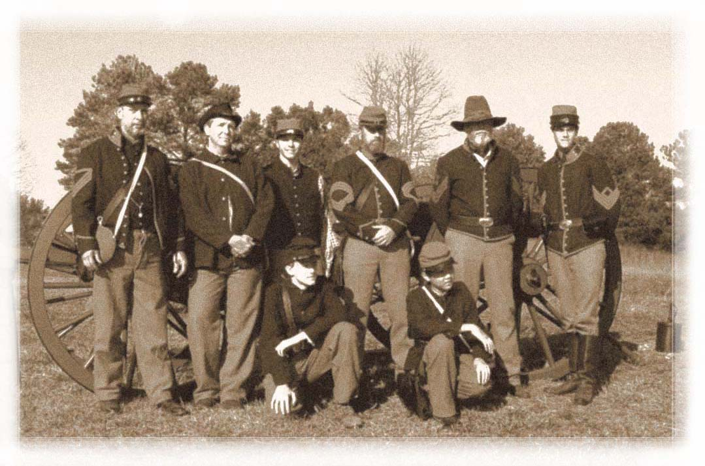
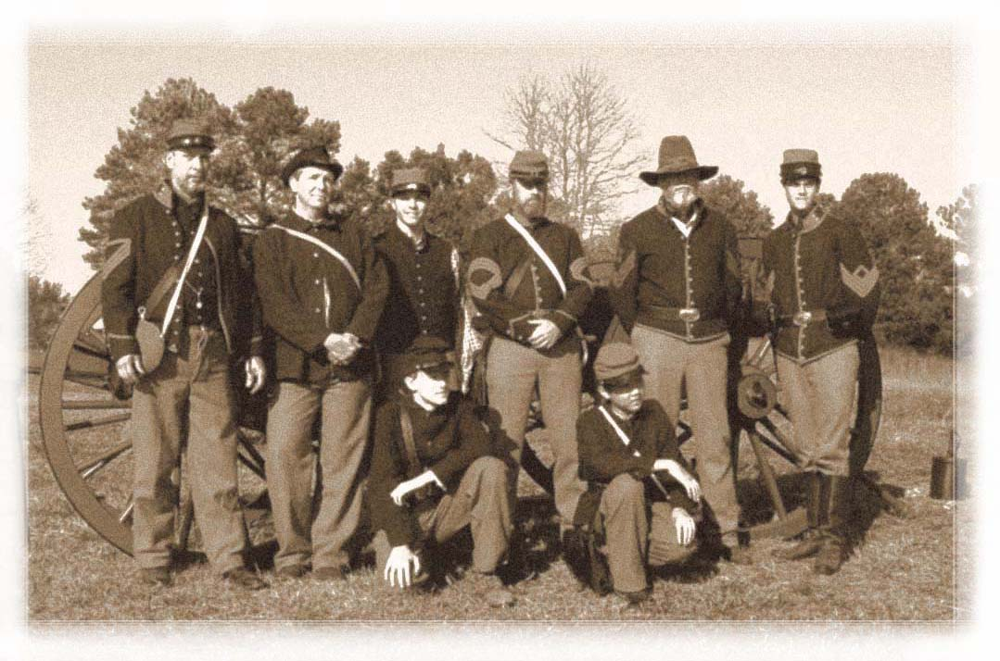

Thank you for your interest
One of our officers will be contacting you shortly. We hope to see you soon at one of our events.

One of our officers will be contacting you shortly. We hope to see you soon at one of our events.

 King’s Battery Mountaineers
King’s Battery Mountaineers
Loganville, GA 30052
Website design:Lisa Garcia Moss
© 2009. All rights reserved.
 To find out more about the history of our “galvanized” Federal unit, the 13th N.Y. Independent, click the unit’s flag.
To find out more about the history of our “galvanized” Federal unit, the 13th N.Y. Independent, click the unit’s flag.